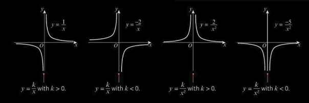

Created with Adobe Dreamweaver CS4 (2002), hosted on Github Pages. This website is best viewed on Internet Explorer 8 or equivalent, with a 64KB/S or greater modem, and Jetbrains Mono, because it's the best font ever!
Go Home... | Go To The Index... | Maths / Chapter 4
A reciprocal is a graph of \(y=\frac{k}{x}\), where K is any constant
They have asymptotes (lines they don't cross) at x=0 and y=0
